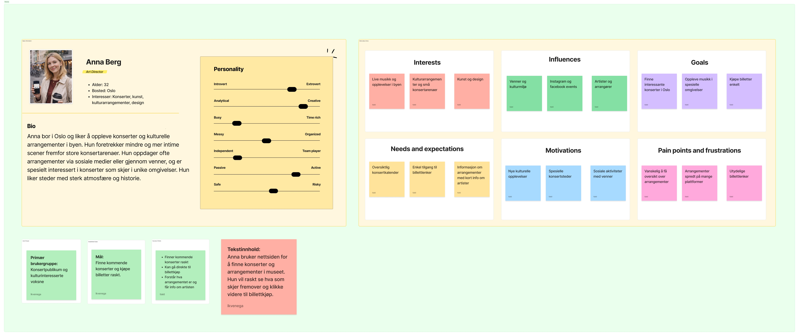
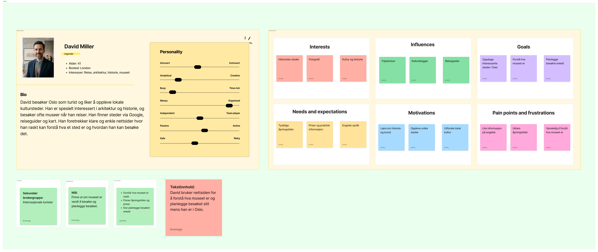
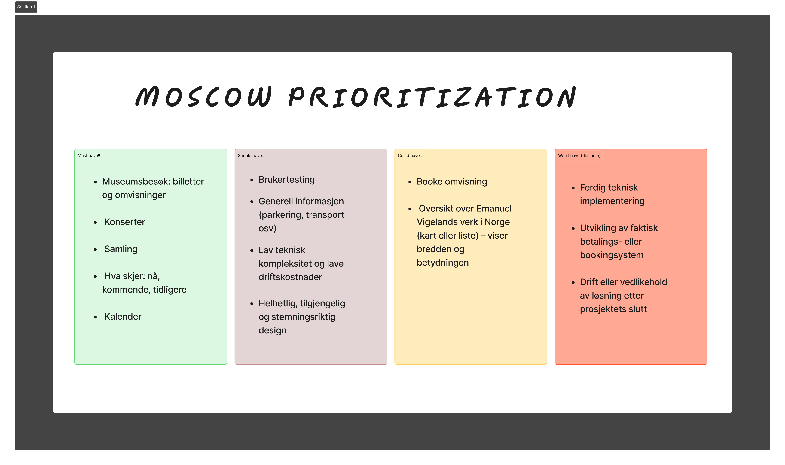
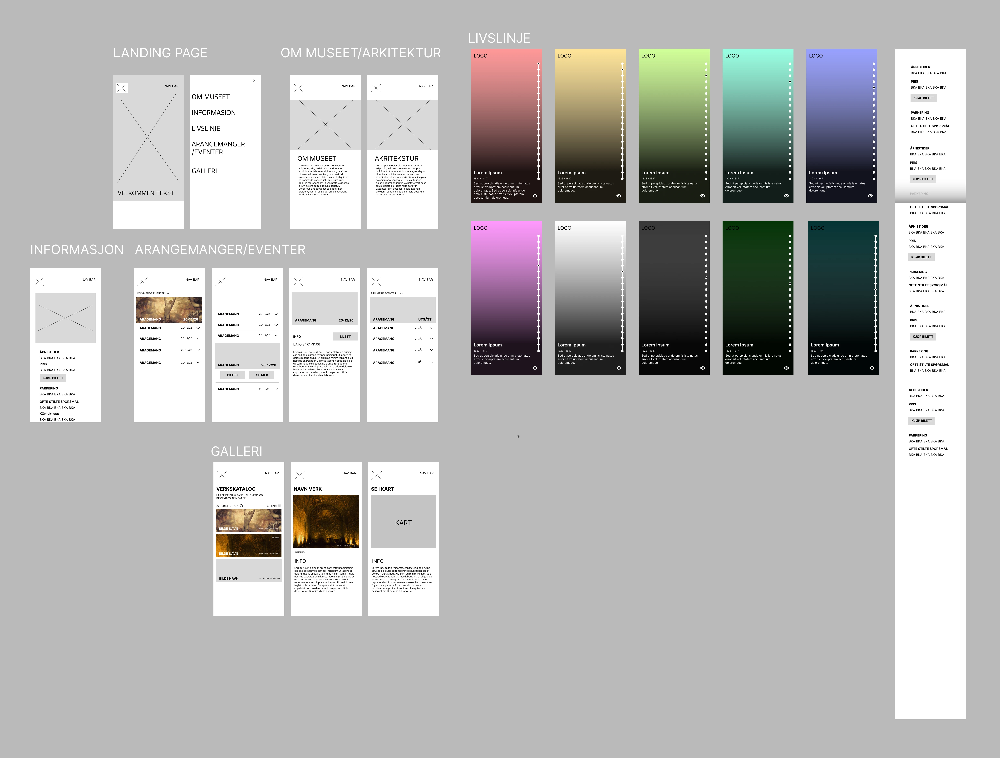
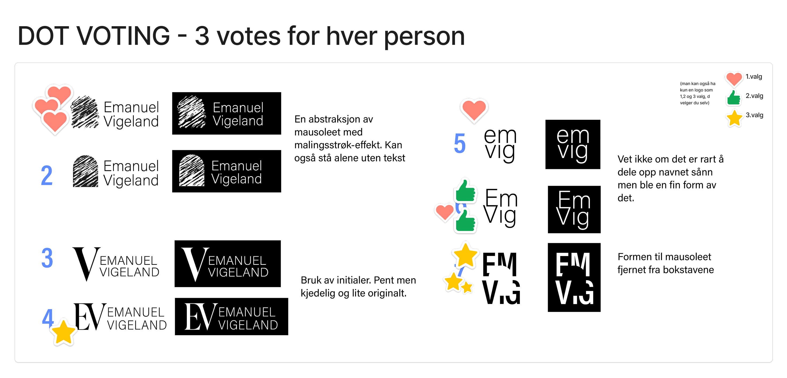

Emanuel
Vigeland
Museum
PROSESS
Prosessfaser
01. Prosess
02. UX-evaluering
03. Personas
04. MoSCoW
05. Utforskning
Prosess
Ekskursjon
Intervju med daglig leder
UX-evaluering
Spørreundersøkelse
Personas
MoSCoW
Skisser
Brukertesting
Hi-fi prototype
Designsystem
UX-evaluering
Fragmentert konsertinfo
Arrangementsinformasjon var spredt mellom nettside og Facebook — brukerne visste ikke hvor de skulle lete.
Ingen tydelige CTA-er
Kun tekstlenker — ingen knapper som veiledet brukerne videre til billettkjøp eller besøksinfo.
Manglende mobiltilpasning
Nettsiden var ikke responsiv. Majoriteten av brukerne er mobile — og opplevelsen falt helt fra hverandre.
Atmosfære ikke formidlet
Museets mørke, sanselige karakter er en styrke — men ble ikke kommunisert gjennom den digitale flaten.
Personas
Vi utviklet fire personas basert på intervjuer og spørreundersøkelse — fra den kulturinteresserte faste besøkende til den tilfeldige turisten.


MoSCoW-prioritering

Utforskning & iterasjoner
Fra tidlige lo-fi skisser og utforskning av home-page-uttrykket, til dot voting på logoforslag. Vi testet bredt — farger, layout og identitet — før vi låste retningen.


Tidlige iterasjoner av home-page
